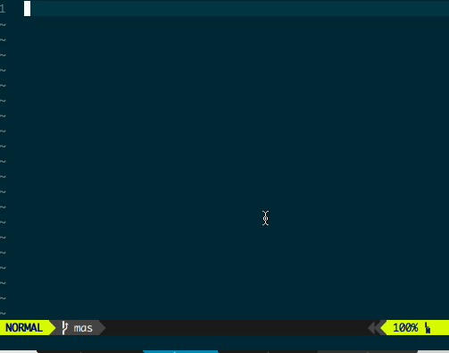
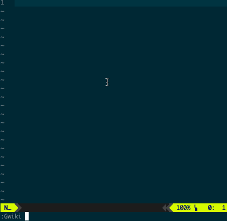

Vim 文件快速跳转插件
条评论日常使用 VIM 的时候经常有跳转到特定目录下某个文件的需求:
- 使用 vimwiki 记笔记时会默认把所有笔记保存在目录
~/vimwiki下, 当我们想查看某个笔记时就打开那个目录下的某个文件; - 我平时会写一些 shell 工具, 保存在
~/bin目录下, 就会有在这个目录下创建或者打开文件的需求; - 如果你用 ultisnip 之类的插件的话, 就需要经常编辑不同类型文件对应的 snippets 文件;
- …
根据我个人的使用经验, 在特定目录下打开某个文件 的需求还是很多的, 于是便写了插件 FileJumper 来实现这个需求.
这个插件提供了下面这些功能:
- 通过一行配置能快速定义和某个目录绑定的
command; - 通过执行
command filename能快速打开对应目录下的某个文件, 能通过tab键补全文件名; - 能通过指定不同的 vim 命令以不同的模式打开文件, 如
command filename vnew等;
下面就会介绍如何安装, 配置已经使用这个插件.
安装和配置
可以通过 vim-plug 进行安装:
Plug 'https://github.com/hiberabyss/FileJumper' |
安装完成后通过配置变量 g:file_jumper_command 来定义不同的 command, 下面是插件默认的配置:
let g:file_jumper_command = { |
Gbin之类的是命令名;dir表示和这个命令绑定的目录;extension表示对应目录下的文件的默认后缀名, 在打开文件时会被自动添加上去;keymap表示给这个命令映射一个快捷键;
如何使用
执行 Gbin pyserver 就会默认通过 tabnew ~/bin/pyserver 来打开对应的文件:

在上面的演示中, 我们只输入了 py 然后按 tab 键就可以自动补全文件名 pyserver.
我们也可以通过添加 vim 命令来决定文件的打开方式:

从上面的演示中可以看出在使用了 vnew 或者 e 之后, vim 打开文件的方式会和默认的不一样. 我们也可以使用 bot vnew 之类的复合命令.
希望你能喜欢这个插件, 如果遇到什么问题或者有什么建议, 欢迎 Comment 或者再 github 上提交 issue.
推荐阅读
- 本文链接：https://hiberabyss.github.io/2018/04/13/vim-file-jumper/
- 版权声明：本博客所有文章除特别声明外，均采用 CC BY-NC-SA 3.0 CN 许可协议。转载请注明出处！